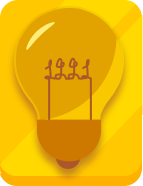

Стислий огляд
Програма складається з трьох тематичних модулів із чіткою послідовністю: становлення, розквіт та спадщина філософської думки.
Подорож у світ античних ідей
Переконайтесь, що ваші студенти можуть зануритися в знання з телефону чи великого екрана. Ми розклали матеріал на зручні модулі, адаптивні блоки та картки, які автоматично підлаштовуються під простір.
Програма складається з трьох тематичних модулів із чіткою послідовністю: становлення, розквіт та спадщина філософської думки.
Студенти опанують етапи розвитку античної філософії, навчаться виокремлювати ключові тези мислителів та зіставляти їх із сучасними концепціями критичного мислення.
Переглянути навчальні матеріали →Кожен модуль містить короткі лекції, інтерактивні сценарії та практики, що зручно читаються навіть на екрані смартфона.
Сократ та софісти, народження діалектики, формування етики.
Платон, ідеї та форми, роль діалогів у розвитку логіки.
Арістотель, логіка, фізика та метафізика: інструменти аналізу.
Стоїки, епікурейці та римське продовження грецької думки.
Картки автоматично підлаштовуються: від трьох колонок на десктопі до повноекранної каруселі на мобільних.
Навчаємося ставити запитання та шукати істину в діалозі.
Візуалізовані діалоги та інфографіка ідей та форм.
Алгоритми, діаграми та дерева рішень для складних тем.

Практики стійкості з адаптивними трекерами прогресу.
Для кожної навички ми налаштували компоненти так, щоби основний текст залишався читабельним навіть при масштабуванні інтерфейсу.
Файли та інструкції згруповані в компактні картки. На широких екранах вони розширюються у дві колонки, на мобільних — в один стовпець.
Пояснення адаптивної структури уроків, сценарії інтерактивів.
Завантажити PDFГалерея ілюстрацій та аудіозаписи, оптимізовані під мобайл.
Переглянути колекціюФайли для друку та цифрові воркбуки з автоперемиканням режиму.
Відкрити шаблониДашборди з responsive графіками та адаптивними фільтрами.
Перейти до панелі